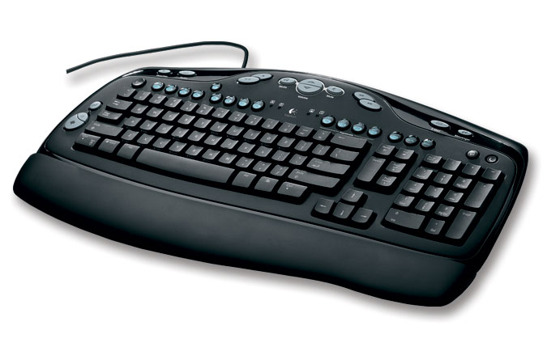
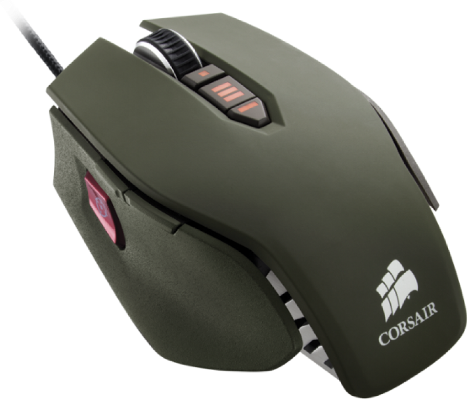
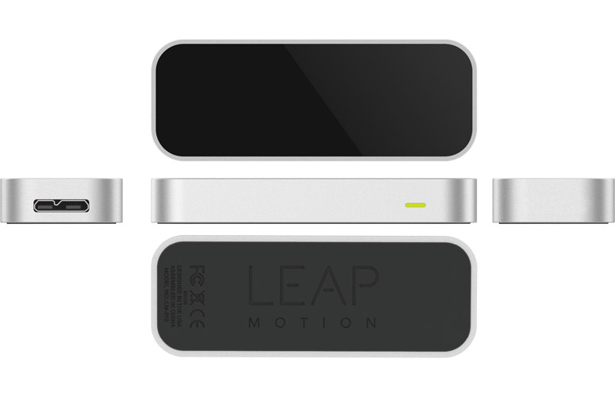
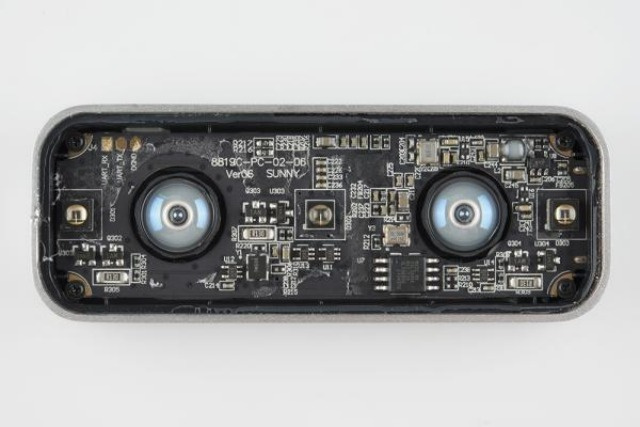

Leap Motion Controller
Nuevas Alternativas de Interacción
Pablo de Haro / @pabdeharo / +Pablo de Haro / pablitar (Internet)
www.leapmotion.com
Objetivo
Interacción Tradicional
(Actual?)
Teclado

- Preciso
- Permite muchas combinaciones
- Ideal para ingresar texto
- Es instantáneo
Pero...
- Digital
- Mucho aprendizaje
Mouse

- Analógico en dos ejes
- Simple
- Una mano
Pero...
- No tan preciso
- Pocas combinaciones
- Una mano
Leap Motion Controller

¿Cómo funciona?

¿Cómo funciona? (2)
Juguemos

Leap Motion
- Gran ancho de banda
- Muchos canales simultáneos
- Complemento de teclado y mouse
- Es "barato" y "preciso"
Pero...
- Cansa las manos
- No es tan preciso
- Hay poco software
API

Muchas Gracias!
-- FIN --